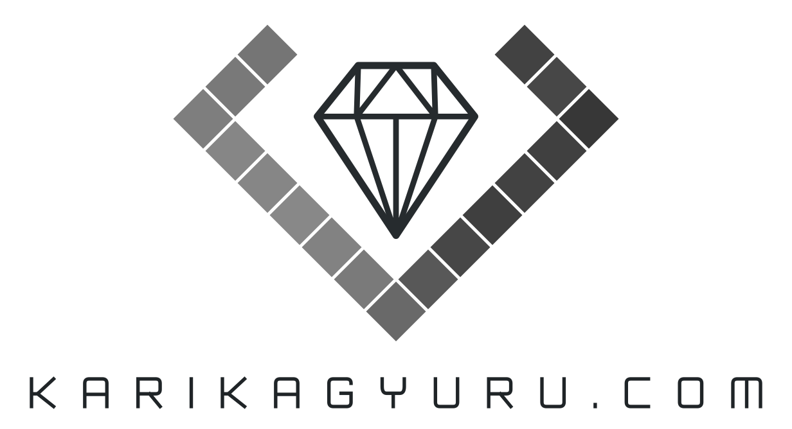
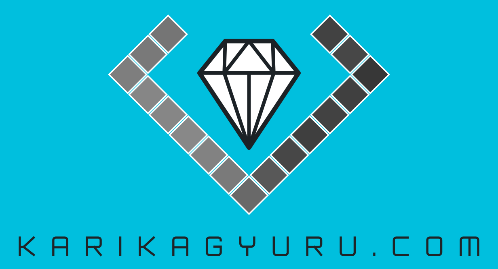

KARIKAGYURU.COM – két arculati változat
Ugyanaz az oldalszerkezet, két emblémahasználat. Egyik sem végleges – az ötvös jóváhagyására vár.
Az emblémák arányhű vektoros újrarajzolások az ügyfél két e-mailben küldött logójából (kocka.jpg és gyémántos kék logó.png; az eredetiek 268×251 és 231×130 képpontosak, nagyításra alkalmatlanok). A négyzetek elrendezése, a szürke árnyalatok és a gyémánt helye az eredetiből mérve. A KARIKAGYURU.COM betűi az eredetiben 8 képpont magasak, ezért azonos stílusban újrarajzolva. Javaslat, nem jóváhagyott végleges logó.
Logófájlok



Az oldalon – asztali gép és telefon
A változat – monokróm embléma
Fehér fejléc, szürke embléma gyémánttal. Csendesebb, a kék csak a hangsúlyokon jelenik meg. Megnyitás
B változat – kék alapú embléma
A kék csempe a régi weboldal kék arculatát hozza vissza, kisebb méretben is felismerhető. Megnyitás
Olvashatóság
| Asztali | Mobil | |
|---|---|---|
| Logó feliratával együtt (kép) | A felirat a láblécben 170 px széles logón kb. 5 px magas – csak díszítésként működik. | Olvashatatlan. Fejlécbe nem alkalmas. |
| Embléma + szöveges KARIKAGYURU.COM (fejléc) | Jól olvasható, ritkított nagybetűs márkanév. | Jól olvasható (≈13 px), a menügomb mellett is elfér. |
| A – monokróm embléma | Letisztult, a fotók maradnak a főszereplők. | 32 px-en a gyémánt még kivehető. |
| B – kék csempe | Erősebb márkajel, jobban emlékezetes. | Kis méretben is jól elkülönül; a gyémánt részletei kevésbé. |
Javaslat: a fejlécben mindkét változatnál az emblémát és a szöveges márkanevet használjuk; a teljes logó (felirattal) nagy méretben – lábléc, nyomtatvány, közösségi média. A végleges döntés az ötvösé.